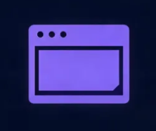
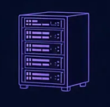

SOBRE MIM
Quem eu sou?
Meu nome é Kayo Julian, tenho 17 anos e sou desenvolvedor web, trabalho com: HTML, CSS, JAVASCRIPT, PHP e SQL.
Sistemas e sites
Front-end: a aparência do site como você conhece e usa (e-commerce ou institucional) E o back-end: o coração do sistema funcional, por trás da sua presença e experiência no projeto. É isso que eu faço de melhor.

Front-end
O desenvolvimento do Front-end para um negócio é um conceito amplo. Acredito que meus conhecimentos na área do Front-end me permitam combinar perfeitamente os meus conhecimentos de design e tecnologia, de modo que a representação visual seja única e impressione os clientes. Ofereço soluções de front-end eficazes: a página da web criada carrega instantaneamente em qualquer dispositivo e é conveniente de usar. O front-end ajuda a captar a atenção dos clientes e a aumentar a taxa de conversão.

Beck-end
Por trás de qualquer interface de qualidade há um “motor” altamente produtivo que contribui para o sucesso geral. Com minha experiência em back-ends, posso garantir o funcionamento perfeito das funções principais da plataforma. Tenho ampla experiência na criação de sistemas altamente sofisticados e seguros para pagamentos de clientes, CRMs e sistemas que garantem a transferência rápida de dados para bases de dados extremamente confiáveis. Meu objetivo é otimizar completamente os processos empresariais por meio de algoritmos avançados, aplicar soluções adequadas para proteger informações de clientes sensíveis contra roubo, atender plenamente à LGPD e garantir a estabilidade de todo o sistema.